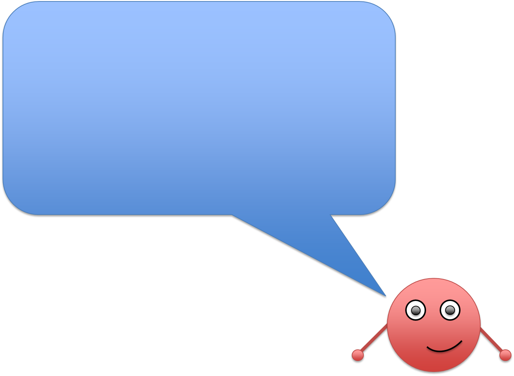
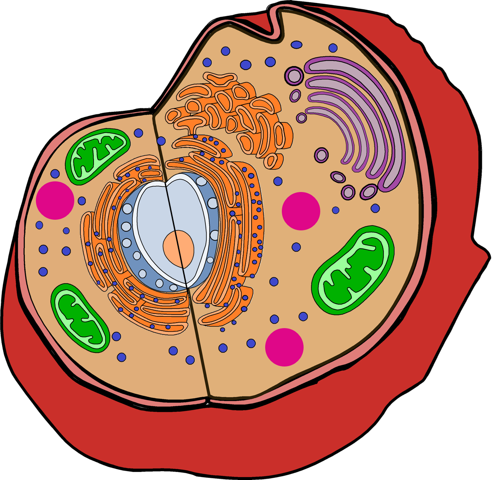

- Hover your mouse over the word orange.
- You can click orange words when they turn green to learn more.
- Some images are also clickable! Hover over the one below to see how it responds.
- The glossary button at the bottom right will open a glossary in a new tab.
- Be sure to check each page for these clickable objects!
- You should follow each link to be prepared for Cell Jeopardy at the end!